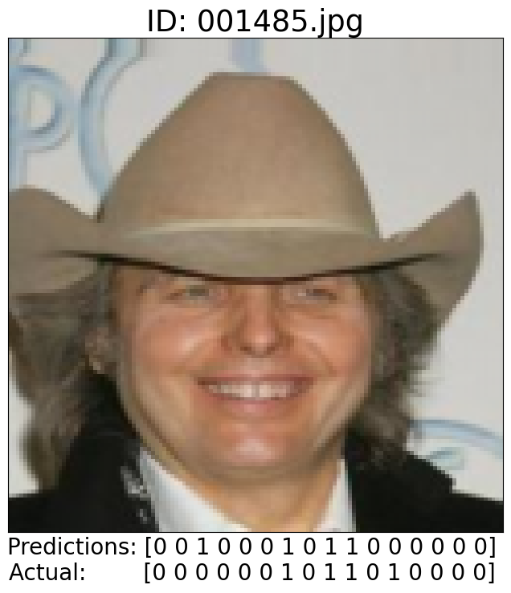

import torch
import torch.nn as nn
import torch.nn.functional as F
import numpy as np
import matplotlib.pyplot as plt # for plotting
from matplotlib.axis import XAxis
from matplotlib.axis import YAxis
import torch.optim as optim #for gradient descent
import torchvision.models as models
import random
import torchvision.transforms as transforms
import os
import math
from sklearn.metrics import precision_score, recall_score, f1_score, accuracy_score, jaccard_score, hamming_loss
import torch.cuda as cuda
import logging#this cell is just for reproducaibility, it sets the seed for random, numpy and torch. change the seed if you want different results
seed = 42
random.seed(seed)
np.random.seed(seed)
torch.manual_seed(seed)<torch._C.Generator at 0x1677f164790>#this cell will load the data and put it into tensors for training
max_samples = 25000 #how many samples to use, -1 is all of them
#VGG_16 dataloader: its the same thing but the transforms are slightly off
#only works on dominiks computer
#adding a section to split data intro training/testing/validation
#just keeping it to 50k to make things easier
transform1 = transforms.Compose([
transforms.ToTensor(),
transforms.Resize((128,128)),
transforms.Normalize(mean = [0, 0, 0], std = [1, 1, 1])
])
totensor = transforms.ToTensor()
celeb_data = {}
k = os.listdir("celeba/img_align_celeba")
imageno = 0
with open("celeba/list_attr_celeba.csv") as labels:
classes = labels.readline()
classes = classes.split(sep = ",")
for l in k:
if(max_samples != -1 and imageno > max_samples):
break
lab = labels.readline().split(sep=",")
lab[-1] = lab[-1].replace('\n', "")
name = lab[0]
lab.pop(0)
#print(lab_copy)
celeb_data[name] = (transform1(plt.imread("celeba/img_align_celeba/" + l)),(torch.FloatTensor([int(k) for k in lab])))
imageno +=1
#progress bar :)
if(imageno%(max_samples/100) == 0):
percent = round(imageno/max_samples*100, 3)
percent = ('%.0f' %percent)
print('\r' + str(percent) + "% Complete", end='', flush=True)C:\Users\Dominik Danda\AppData\Local\Packages\PythonSoftwareFoundation.Python.3.11_qbz5n2kfra8p0\LocalCache\local-packages\Python311\site-packages\torchvision\transforms\functional.py:153: UserWarning: The given NumPy array is not writable, and PyTorch does not support non-writable tensors. This means writing to this tensor will result in undefined behavior. You may want to copy the array to protect its data or make it writable before converting it to a tensor. This type of warning will be suppressed for the rest of this program. (Triggered internally at ..\torch\csrc\utils\tensor_numpy.cpp:212.)
img = torch.from_numpy(pic.transpose((2, 0, 1))).contiguous()100% Complete#this cell will shuffle and split the dataset
sample_ratio = (8, 1, 1) #the ratio used to split the data, does not need to add up to 10
shuf_list = list(celeb_data.keys())
random.shuffle(shuf_list)
imageno = 0
train_data = []
val_data = []
test_data = []
train_sample_num = sample_ratio[0]/math.fsum(sample_ratio)*max_samples
val_sample_num = sample_ratio[1]/math.fsum(sample_ratio)*max_samples
test_sample_num = sample_ratio[2]/math.fsum(sample_ratio)*max_samples
for i in shuf_list:
if imageno < (train_sample_num):
train_data.append(i)
elif imageno >= (train_sample_num) and imageno < (train_sample_num+val_sample_num):
val_data.append(i)
else:
test_data.append(i)
imageno += 1train_data_2 = []
counter = 0
for i in train_data:
with torch.no_grad():
j = celeb_data[i][0].cuda()
train_data_2.append((j,celeb_data[i][1]))
cuda.empty_cache()
if(counter%(len(train_data)/100) == 0):
percent = round(counter/len(train_data)*100, 3)
percent = ('%.0f' %percent)
print('\rTrain Data is ' + str(percent) + "% Complete", end='', flush=True)
counter += 1
print("\n")
val_data_2 = []
counter = 0
for i in val_data:
with torch.no_grad():
j = celeb_data[i][0].cuda()
val_data_2.append((j,celeb_data[i][1]))
cuda.empty_cache()
if(counter%(len(val_data)/100) == 0):
percent = round(counter/len(val_data)*100, 3)
percent = ('%.0f' %percent)
print('\rValidation Data is ' + str(percent) + "% Complete", end='', flush=True)
counter += 1
print("\n")
test_data_2 = []
counter = 0
for i in test_data:
with torch.no_grad():
j = celeb_data[i][0].cuda()
test_data_2.append((j,celeb_data[i][1], i))
cuda.empty_cache()
if(counter%(len(test_data)/100) == 0):
percent = round(counter/len(test_data)*100, 3)
percent = ('%.0f' %percent)
print('\rTest Data is ' + str(percent) + "% Complete", end='', flush=True)
counter += 1
print("\n")Train Data is 99% Complete
Validation Data is 99% Complete
Test Data is 0% Complete
def get_model_name(name, batch_size, learning_rate, epoch):
name = "model_{0}_bs{1}_lr{2}_epoch{3}".format(name, batch_size, learning_rate, epoch)
return name#actual model
import torch.nn as nn
import torch.nn.functional as F
import torch.optim as optim
import numpy as np
class primary_net(nn.Module):
def __init__(self):
super(primary_net, self).__init__()
#convolutional
self.conv1 = nn.Conv2d(3, 64, kernel_size=3, stride=1, padding=1, bias = True) #128*128*3 -> 128*128*64
self.conv2 = nn.Conv2d(64, 64, kernel_size=4, stride=2, padding=1, bias = True) #128*128*64 -> 64*64*64
self.conv3 = nn.Conv2d(64, 128, kernel_size=3, stride=1, padding=1, bias = True) #64*64*64 -> 64*64*128
self.pool1 = nn.AvgPool2d(kernel_size=4, stride=4) #64*64*128 -> 16*16*128
#self.conv4 = nn.Conv2d(128, 256, kernel_size=3, stride=1, padding=1, bias = True) #32*32*128 -> 32*32*256
#self.conv5 = nn.Conv2d(256, 256, kernel_size=4, stride=2, padding=1, bias = True) #32*32*256 -> 16*16*256
#self.pool2 = nn.MaxPool2d(kernel_size=2, stride=2) #16*16*256 -> 8*8*256
#classifier
self.fc1 = nn.Linear(16*16*128, 16, bias = True)
def forward(self, x):
x = self.pool1(F.relu(self.conv3(F.relu(self.conv2(F.relu(self.conv1(x)))))))
#x = self.pool2(F.relu(self.conv5(F.relu(self.conv4(x)))))
x = x.view(-1, 16*16*128)
x = self.fc1(x)
#x = self.fc2(x)
return x
#evaluate function
def primary_evaluate(model, data_list):
criterion = nn.BCEWithLogitsLoss()
total_err = 0
total_loss = 0
for i in range(len(data_list)):
inputs = data_list[i][0]
labels = data_list[i][1]
if torch.cuda.is_available():
inputs = inputs.cuda()
labels = labels.cuda()
labels = torch.stack([labels])
outputs = model(inputs)
#compute loss using the criterion, and add to the total loss
loss = criterion(outputs, labels)
total_loss += loss.item()
'''
Hamming Loss: Will compute the number of incorrectly predictions per label,
and divide it by the total number of predictions in the label.
Example:
Predicted label [0, 1, 0, 1, 0, 0]
True label [0, 1, 1, 0, 0, 1]
Incorrect predictions: 3
Total prediction: 6
Hamming Loss = 3/6 = 0.5
'''
#compute error using Hamming Loss, and add to the total error
probs = torch.sigmoid(outputs).detach().cpu().numpy()
preds = (probs > 0.5).astype(int)
targets_np = labels.cpu().numpy()
error = hamming_loss(targets_np, preds)
total_err += error
#error and loss were stored as a running total
#to find the average, we divide by the # of samples
return (total_err/len(data_list), total_loss/len(data_list))
#training loop
def primary_train(model, train_list, val_list, epochs, learning_rate, batch_size):
optimizer = optim.SGD(model.parameters(), lr=learning_rate, momentum=0.9)
criterion = nn.BCEWithLogitsLoss()
train_err = np.zeros(epochs)
train_loss = np.zeros(epochs)
val_err = np.zeros(epochs)
val_loss = np.zeros(epochs)
#state_dict_list = [] #gonna leave this unfinished for now
epoch = 0
for i in range(epochs):
total_err = 0
total_train_loss = 0
counter = 0
train_list_copy = train_list[:]
random.shuffle(train_list_copy)
while train_list_copy:
batch = train_list_copy[:batch_size]
train_list_copy = train_list_copy[batch_size:]
inputs = torch.stack([i[0] for i in batch])
labels = torch.stack([i[1] for i in batch])
if torch.cuda.is_available():
inputs = inputs.cuda()
labels = labels.cuda()
outputs = model(inputs)
#compute loss using the criterion, and add to the total loss
loss = criterion(outputs, labels)
#compute the gradient
optimizer.zero_grad()
loss.backward()
optimizer.step()
#add loss to running total
total_train_loss += loss.item()
#compute error using Hamming Loss, and add to the total error
probs = torch.sigmoid(outputs).detach().cpu().numpy()
preds = (probs > 0.5).astype(int)
targets_np = labels.cpu().numpy()
error = hamming_loss(targets_np, preds)
total_err += error
#progress bar to keep track of long epochs
if(counter%(len(train_list)/100) == 0):
percent = round(counter/(len(train_list))*100, 3)
percent = ('%.0f' %percent)
print('\rNext Epoch is ' + str(percent) + "% Complete", end='', flush=True)
counter += 1
print("\n")
#error and loss were stored as a running total
#to find the average, we divide by the # batch operations
train_err[epoch] = float(total_err) / (len(train_list)/batch_size)
train_loss[epoch] = float(total_train_loss) / (len(train_list)/batch_size)
#evaluate model
(val_err[epoch], val_loss[epoch]) = primary_evaluate(model, val_list)
#print status of last completed epoch
print(("Epoch {}: Train Error: {}, Train Loss: {} |"+
"Validation Error: {}, Validation Loss: {}").format(
epoch + 1,
train_err[epoch],
train_loss[epoch],
val_err[epoch],
val_loss[epoch]))
#keep track of the epoch with the lowest validation error
if epoch > 0 and val_err[epoch] < np.min(val_err[:epoch]):
best_epoch = epoch
name = get_model_name("primary_net", batch_size, learning_rate, best_epoch)
best_model_wts = model.state_dict()
print("New best model found and saved")
epoch += 1
# Save the current model (checkpoint) to a file, checkpoint every epoch
#not saving it to a file, I'm getting some runtime errors I don't wanna deal with, I'm just saving the state_dict
#save the epoch with the lowest validation error to the disk
torch.save(best_model_wts, "checkpoints/" + name)
print('Finished Training')
#plot training graphs
plt.title("Train vs Validation Error (Lower is Better)")
n = len(train_err) # number of epochs
plt.plot(range(1,n+1), train_err, label="Train")
plt.plot(range(1,n+1), val_err, label="Validation")
ax = plt.gca()
ax.set_xlim([1, n])
ax.set_ylim([0, 1])
plt.xlabel("Epoch")
plt.ylabel("Error")
plt.legend(loc='best')
plt.grid()
plt.savefig("graphs/" + name + "_error.png")
plt.show()
plt.title("Train vs Validation Loss (Lower is Better)")
plt.plot(range(1,n+1), train_loss, label="Train")
plt.plot(range(1,n+1), val_loss, label="Validation")
ax = plt.gca()
ax.set_xlim([1, n])
ax.set_ylim([0, 1])
plt.xlabel("Epoch")
plt.ylabel("Loss")
plt.legend(loc='best')
plt.grid()
plt.savefig("graphs/" + name + "_loss.png")
plt.show()net = primary_net()
net = net.cuda()
primary_train(net, train_data_2, val_data_2, epochs = 10, learning_rate = 0.0005, batch_size = 1)Next Epoch is 99% Complete
Epoch 1: Train Error: 0.165390625, Train Loss: 0.38497242720387875 |Validation Error: 0.151225, Validation Loss: 0.34641992423534396
Next Epoch is 53% Complete--------------------------------------------------------------------------- KeyboardInterrupt Traceback (most recent call last) Cell In[8], line 4 1 net = primary_net() 2 net = net.cuda() ----> 4 primary_train(net, train_data_2, val_data_2, epochs = 10, learning_rate = 0.0005, batch_size = 1) Cell In[7], line 111, in primary_train(model, train_list, val_list, epochs, learning_rate, batch_size) 109 #compute the gradient 110 optimizer.zero_grad() --> 111 loss.backward() 112 optimizer.step() 113 #add loss to running total File ~\AppData\Local\Packages\PythonSoftwareFoundation.Python.3.11_qbz5n2kfra8p0\LocalCache\local-packages\Python311\site-packages\torch\_tensor.py:522, in Tensor.backward(self, gradient, retain_graph, create_graph, inputs) 512 if has_torch_function_unary(self): 513 return handle_torch_function( 514 Tensor.backward, 515 (self,), (...) 520 inputs=inputs, 521 ) --> 522 torch.autograd.backward( 523 self, gradient, retain_graph, create_graph, inputs=inputs 524 ) File ~\AppData\Local\Packages\PythonSoftwareFoundation.Python.3.11_qbz5n2kfra8p0\LocalCache\local-packages\Python311\site-packages\torch\autograd\__init__.py:266, in backward(tensors, grad_tensors, retain_graph, create_graph, grad_variables, inputs) 261 retain_graph = create_graph 263 # The reason we repeat the same comment below is that 264 # some Python versions print out the first line of a multi-line function 265 # calls in the traceback and some print out the last line --> 266 Variable._execution_engine.run_backward( # Calls into the C++ engine to run the backward pass 267 tensors, 268 grad_tensors_, 269 retain_graph, 270 create_graph, 271 inputs, 272 allow_unreachable=True, 273 accumulate_grad=True, 274 ) KeyboardInterrupt:
model = primary_net()
model = model.cuda()
model.load_state_dict(torch.load("checkpoints/model_primary_net_bs256_lr0.0005_epoch703"))
test_err = 0
test_loss = 0
(test_err, test_loss) = primary_evaluate(model, test_data_2)
print("Test Error: {}, Test Loss: {}".format(test_err, test_loss))Test Error: 0.11060575769692123, Test Loss: 0.2546915303556765#this cell will evaluate the model on the test data and save sample images
print(classes)
torch.no_grad()
newpath = r'graphs/tests/seed' + str(seed) + '_samples' + str(max_samples) + '_sampleratio' + str(sample_ratio[0]) + "-" + str(sample_ratio[1]) + "-" + str(sample_ratio[2])
if not os.path.exists(newpath):
os.makedirs(newpath)
for i in range(20):
inputs = test_data_2[i][0]
labels = test_data_2[i][1]
if torch.cuda.is_available():
inputs = inputs.cuda()
labels = labels.cuda()
labels = torch.stack([labels])
outputs = model(inputs)
probs = torch.sigmoid(outputs).detach().cpu().numpy()
preds = (probs > 0.5).astype(int)
targets_np = labels.cpu().numpy()
string = ""
for j in preds:
string += "Predictions: "
for k in range(len(preds)):
string += str(preds[k]) + " "
string += "\nActual: "
for k in range(len(targets_np)):
string += str(targets_np[k].astype(int)) + " "
logger = logging.getLogger()
old_level = logger.level
logger.setLevel(100)
plt.title("ID: " + test_data_2[i][2])
plt.xticks([])
plt.yticks([])
plt.xlabel(string, horizontalalignment='center', fontsize=20)
plt.rcParams.update({'font.size': 22})
fig = plt.gcf()
fig.set_size_inches(8, 8)
plt.imshow(celeb_data[test_data_2[i][2]][0].numpy().transpose(1,2,0))
plt.savefig("graphs/tests/seed" + str(seed) + '_samples' + str(max_samples) + '_sampleratio' + str(sample_ratio[0]) + "-" + str(sample_ratio[1]) + "-" + str(sample_ratio[2]) + "\\" + test_data_2[i][2] + ".png")
logger.setLevel(old_level)['image_id', 'Bald', 'Big_Lips', 'Big_Nose', 'Black_Hair', 'Blond_Hair', 'Brown_Hair', 'Chubby', 'Gray_Hair', 'Male', 'No_Beard', 'Pale_Skin', 'Pointy_Nose', 'Receding_Hairline', 'Straight_Hair', 'Wavy_Hair', 'Young\n']